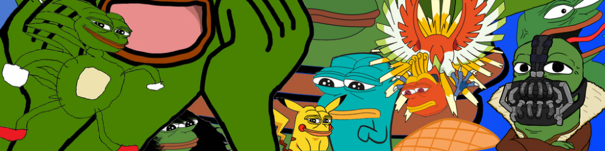
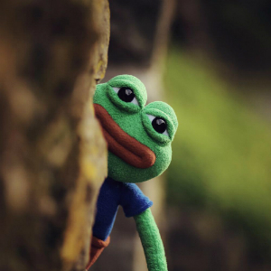
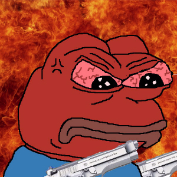

Герои
Лягушонок Дон
Эта истоиря о маленьком лягушонке по имени Дон
Entre las 'Siete Maravillas' de la Antigüedad, el faro de Alejandría es el único que ha tenido el honor de saltar a las crónicas de los medios de comunicación en estos últimos tiempos. En el dique portuario de la gran ciudad egipcia, a pocos kilómetros del delta del Nilo, ha tenido lugar a lo largo del tiempo una imponente búsqueda arqueológica submarina para recuperar los restos de uno de los más fascinantes complejos monumentales de la Antigüedad. Es preciso aclarar que 'faro' deriva del nombre griego de la isla de Pharos, próxima a Alejandría (la ciudad fundada en abril del 331 a. C. por el príncipe macedonio de quien toma el nombre).
Península artificial
Alejandro Magno quiso unir Pharos a tierra firme e hizo construir un dique de 1.200 metros de largo que, ampliado paso a paso, forma hoy la península de Ras-et-Tin. Sobre un escollo al este de la isla de Pharos se encontraba, precisamente, una gran torre con un faro. A la muerte del joven soberano macedonio, ocho años después de la fundación de la ciudad, Alejandría se convierte en la capital del Egipto de los Tolomeos. Durante el reinado de la dinastía Tolomeica (304 a. de C. al 30 d. C.) la ciudad contaba con numerosos edificios monumentales entre los que se encontraban el famoso Sema, la tumba de Alejandro Magno y la universidad dedicada a las musas, el Museion, con su legendaria biblioteca, la mayor colección de manuscritos del mundo antiguo que fundada por Tolomeo I, custodiaba 700.000 volúmenes, en su mayoría destruidos por un incendio en el 48 a. C. durante el asedio de Julio César a la ciudad. Pero ninguno de estos edificios, por otra parte espléndidos, resplandecía como el faro, el único incluido entre las 'Siete Maravillas' del mundo. Su construcción se inició durante el primer decenio del dominio tolomeico. La torre se encontraba rodeada por una terraza rectangular de 340 metros de perímetro y protegida con gruesos muros rompeolas. La construcción, totalmente revestida exteriormente de mármol, contaba con una estructura tripartita: un cuerpo rectangular (de 30,60 metros cada lado y 71 metros de alto), ligeramente estrechado hacia lo alto, constituía la parte inferior del faro. La primera torre acababa en una amplia plataforma, decorada en sus cuatro ángulos con estatuas de tritones. De la plataforma, que no era la base, salía el segundo cuerpo del faro, una torre octogonal bastante más estrecha y de 34 metros de altura. Dadas las reducidas dimensiones, esta última torre contaba con una rampa de carga y la escalera seguía por su interior.
Espejos amplificadores
Sobre la plataforma octogonal, una estructura circular contenía en su interior la instalación para la iluminación del faro. Ésta se basaba en una maravillosa serie de espejos cóncavos, reflectores que tenían la misión de amplificar y dirigir la luz. El edificio terminaba con la así llamada linterna (no en el sentido de instrumento para iluminar, sino en el arquitectónico de construcción circular con claraboyas que sirven para coronar un edificio), una pequeña y elegante estructura apoyada sobre columnas y de techo cónico, culminada con una estatua de Zeus (o Poseidón). Con una altura completa de 120-140 metros, el faro de Alejandría era (sin considerar las pirámides egipcias), la construcción más alta de la Antigüedad.
El castillo del mameluco
El faro de Alejandría permaneció intacto durante casi 10 siglos, hasta que una serie de terremotos causó su progresivo deterioro. Sus ruinas quedaron abandonadas a la entrada del Puerto Grande durante cerca de 100 años, cuando, en 1480, el sultán mameluco Kait Bey decidió fortificar la costa y alzó, en ese lugar, un castillo que todavía hoy se encuentra en pie y que lleva el nombre de su constructor.
Бандит Дигги
Эта история о кровавом бандите Дигги
Sigue el misterio sobre el fin de la fabulosa estatua de Zeus
Imagínese cuánto tiempo y dinero costaría hoy la construcción de un edificio religioso tan grande como para albergar una estatua de cuatro pisos de alto. En el año 479 a.C., los griegos saboreaban la victoria sobre los persos de Jerjes en la batalla de Platea, así que decidieron consagrar un nuevo templo a Zeus, padre de todos los dioses, en la ciudad de Olimpia, a unos 150 kilómetros al oeste de Atenas.
La construcción se encargó al arquitecto Líbon que la finalizó en el año 456 a.C. Sus dimensiones eran descomunales: la base medía 64,10 por 27,70 metros, y las 34 columnas, de 2,25 metros de díámetro cada una, tenían una altura de 10,53 metros. Para construirlo, Libón no escogió el mármol sino un material abundante en aquel lugar, un conglomerato de conchas fósiles.
Los bloques del arquitrabe pesaban cerca de 12 toneladas, y todavía hoy es necesario preguntarse cómo fue posible llevarlo hasta la cúspide de la columna. En el interior del perímetro trazado por las columnas se encontraba la celda, de 13 por 28,75 metros: allí dentro estaba la estatua del culto, sin la cual el templo no podía ser consagrado a Zeus.
Fidias, el artista más prestigioso de Atenas, se encargó de realizar la monumental estatua de Zeus, en marfil y oro. Su peso era tan grande que, para sostenerla, los cimientos de la celda debían bajarse. Ésta tenía 14 metros de altura, la estatua de Zeus, 12 y estaba colocada sobre un pedestal de 1,10 metros: la cabeza del dios casi tocaba el techo.
El oro recubría el cabello, la túnica y las sandalias (aunque estas últimas y cualquier mechón del cabello podrían ser de oro macizo). Se calcula que el revestimiento de estas partes con una capa de oro tan sólo un milímetro de espesor necesitaría más de 1.000 kilos de este metal precioso. Una corona de olivo, similar al premio otorgado a los campeones olímpicos y pintada de verde, adornaba la cabeza de dios. Las zonas desnudas del cuerpo (cara, pecho, brazos y pies) contaban con un revestimiento de marfil, y piedras preciosas realzaban el brillo de los ojos. En su mano diestra, apoyada sobre el brazo del trono, Zeus sostenía la figura de su hija Nike (personificación de la victoria) a tamaño natural y con las alas desplegadas. Con la izquierda, agarraba el largo cetro en forma de lanza con la figura de un águila, su mensajero sagrado, en su extremo.
Hacia finales de la Edad Antigua, un terremoto derribo el templo, cuyos restos salieron a la luz tras las excavaciones realizadas por una misión científica alemana desde 1874 a 1881.
El misterio sobre el destino final de la famosa imagen de Zeus permanece. Existen dos teorías al respecto. Según la primera, la escultura fue destruida en el año 426 d.C. cuando el emperador romano Teodosio II prohibió los Juegos Olímpicos y clausuró el santuario de Olimpia. La otra versión cuenta que la estatua fue transportada hasta Constantinopla e instalada en el palacio de un funcionario de la ciudad. Cuando en el año 476 el palacio se derrumbó tras un incendio, la estatua quedó destruida para siempre.
Шериф Доун
Эта история о слабоумном шерифе по имени Доун
Antípater de Sidón escribía así sobre el magnífico templo de Éfeso: «Cuando vi la sagrada morada de Artemisa, las otras maravillas quedaron en la sombra, porque el propio Sol nunca había visto nada igual fuera del Olimpo.
Hija de Zeus y hermana de Apolo, Artemisa (la Diana de los romanos) era una de las diosas más veneradas en la Antigua Grecia. En el siglo VI a. C., los habitantes de éfeso quisieron alzar en su honor el templo más grandioso de todos los tiempos. Para ello recurrieron al arquitecto Teodoro de Samos, que contaba con una excepcional reputación tras realizar el templo de Hera, conocido como el “laberinto de Samos” por su impresionante bosque de columnas. Elevado en el mismo lugar que un santuario anterior, también dedicado a la diosa, el Artemision medía 50 por 103 metros. Su nave central estaba descubierta y sus lados, circundados por dos filas de columnas: 20 en los laterales, nueve en la parte posterior y ocho en la entrada orientada hacia el Oeste.
La fama del templo se extendió por todo el mundo, merced a sus frisos y su bosque de columnas de 19 metros de altura donadas por Creso, el acaudalado rey de los lidios conquistador de éfeso en el 560 a. C. En la noche del 21 de julio del 356 a. C. Erostrato incendió el templo. Ese mismo día nació Alejandro El Magno quien 23 años después reconstruyó el templo. Peor suerte corrió cuando, ya en el 262 de nuestra era, los godos conquistaron éfeso y lo destruyeron. Más tarde, durante el lmperio bizantino, sus restos quedaron sepultados baje seis metros de barro tras la crecida del río Caistro.
Мистер Президент
Эта история о Мистере Президенте
Una Tumba De 42 Metros De Altura El monumento funerario que Artemisia hizo construir para su marido Mausolo, señor de la Caria, constaba de tres cuerpos (una base, un pórtico o galería de columnas y una cubierta piramidal) y estaba decorado con numerosos bajorrelieves y estatuas, obra de los mejores escultores de la época
Seguramente no todos saben que el término "mausoleo" -tumba monumental en la que reposan los restos de un personaje ilustre- viene del edificio construido en la ciudad de Halicarnaso (la actual Bodrum, en la parte sudoeste de Turquía) para acoger los restos mortales de Mausolo, el sátrapa (gobernador) del rey de Persia, señor de la Caria, muerto en el año 362 a. C.
De esta antigua maravilla quedan hoy muy pocos fragmentos, conservados casi todos en el Museo Británico de Londres. Según cuenta el historiador latino Plinio, la estructura del monumento la formaban tres partes: sobre una base de 19 metros de altura y de 33 por 39 metros de superficie, nacía un pórtico de 36 columnas jónicas de 11 metros. Encima del pórtico, la cubierta, de forma piramidal, contaba con 24 escalones regulares para conmemorar los años de reinado de Mausolo. Más arriba todavía, una cuadriga conducida por Mausolo acompañado de su esposa y hermana Artemisia dominaba todo el conjunto.
Fragmentos del esplendor El monumento realizado por los arquitectos Pitio y Sátiro en mármol alcanzaba los 42 metros de altura, similar a un palacio de 14 pisos. Frisos, esculturas y estatuas, de una belleza inimaginable, se atribuyen por los historiadores a Timoteo, Scopas, Briaxis y Leocarés y remataban la imponente estructura del edificio. De los tres frisos en relieve, el primero representaba una carrera de carros, el segundo, la lucha entre los héroes griegos y las Amazonas, y el tercero, la batalla entre los Lapitas y los Centauros. Hoy en día solamente se puede admirar un fragmento del de las Amazonas que se encuentra en el mencionado Museo Británico. Aunque no es posible reconstruir la disposición exacta de las esculturas y la ornamentación, solamente con estos fragmentos se intuye la calidad excepcional del monumento.
Caballeros vándalos En el siglo XII un terremoto minó la solidez del edificio, pero su destrucción llegó cuando los caballeros de la orden de San Juan conquistaron en 1402 Halicarnaso y construyeron la fortaleza de San Pedro. A comienzos del siglo XVI, para reforzar la fortaleza, los caballeros utilizaron el Mausoleo como si fuera una gruta y fue así como, poco a poco, el sepulcro del sátrapa fue minado para acabar demolido. Aún hoy, y a pesar del trabajo del arqueólogo inglés Charles T. Newton, que comenzó a excavar en aquella zona en 1856, se mantiene la incógnita sobre la ubicación exacta del sarcófago de Mausolo. La hipótesis más generalizada es que no se trataba del monumento funerario de un solo soberano, sino de un sepulcro erigido en honor y recuerdo de una dinastía. Esta nueva hipótesis parece avalada por la presencia de varios tipos de estatuas.
Las estatuas podían dividirse en tres tipos según sus dimensiones. De tamaño natural, heroicas (alrededor de dos metros de altura) y colosales (casi de tres metros). La estatua de Mausolo y de Artemisia (esta última dañada) son de la última clase, pero se han reconocido fragmentos de al menos otras 10 estatuas colosales parecidas. ¿Se trataba de una tumba de familia?
El sepulcro, por fin Una misión arqueológica turco-danesa ha explorado, entre 1966 y 1977, por primera vez la cámara funeraria subterránea del Mausoleo y ha descubierto que estaba formada por una sala central y dos pequeños vestíbulos. En lugar de estar en el centro del edificio, se encontraba en el ángulo noroeste de los cimientos y una gruesa piedra de varias toneladas de peso obstruía el paso. Gracias a las indagaciones de esta misión, se ha averiguado que el Mausoleo se levantó en el interior de un antiguo cementerio.